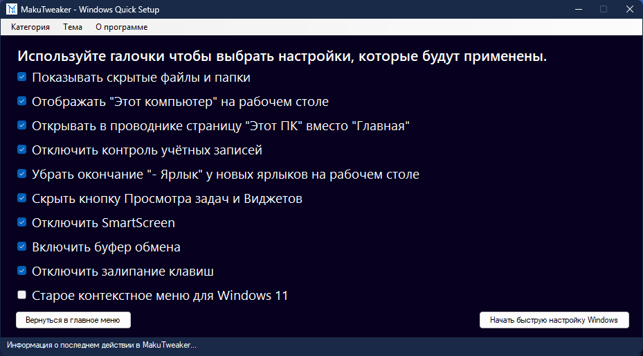
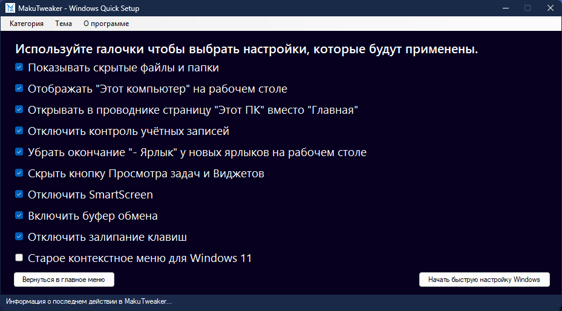

Софт от Аддерли
MakuTweaker
MakuTweaker - это полезная программа, которая позволяет быстро настроить те вещи, которые не так легко найти, а также, если у вас не активирована Windows, вы все равно сможете настраивать панель задач и пуск!
 

MakuTyper
MakuTyper - это блокнот, который может заменить стандартный, и даже больше! Тёмная тема, границы строк, автосохранение текста, полноценная поддержка 4 языков, прозрачность окна, поверх всех окон, и многое другое!
Скачать MakuTyperMakuCheck
MakuChecker - программа для просмотра характеристик ПК, таких как: Процессор, Оперативная память, Материнская плата, первая видеокарта, и если есть, еще и вторая. Программа отображает детализированную информацию о вашем оборудовании, что позволяет легко оценить производительность вашего ПК и выявить потенциальные узкие места.
Скачать MakuCheckMakuCherrywave
MakuCherrywave - это новейшая программа, которая предлагает уникальные функции для редактирования и создания мультимедиа контента. Узнайте больше о возможностях этой программы!
Скачать MakuCherrywave